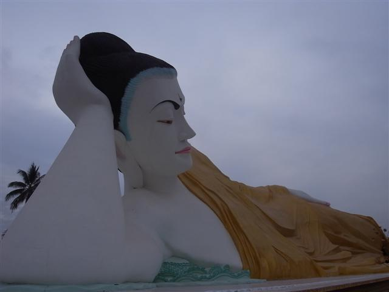

～山上狂奔～
今天的我不是撞邪就是發了什麼瘟，勁做傻事。
Sea Sar Guest House 的餐廳好像廿四小時無休似的，SeTo 說早上五時半就有早餐吃，不過在我五時半前去到已可以叫早餐了，餐廳上亦已有些人在吃東西。
六時前到達隔籬的停車場，認真多人，小小的停車場，很多很多的 trucks，密密麻麻的人，有些 trucks 上早已坐了很多人，但人仍不斷地從可以爬的地方攀上。車尾有個大大的鐵籃，人們的行李全都放在裏面。
人太多，我看見在旁的車好像也上得七七八八，就從車尾上去，不一會車就滿，然後排隊上山。
當 truck 駛到山腳的地方會停一停，有人會說一些我估是祝福的文，有些人會作出捐獻，然後車上又有人收集車資。我完全不知應該付多少錢，在旁的人幫我，這一程要付 3000 Kyat，有點驚訝，比想像中貴很多。
坐 truck 上去是很有趣的，車路很鈄和彎，但車卻風馳電掣，每轉一個彎，整群人都像篩到一邊，坐在邊的人好像就會被擠出去。車上只有我一位外地人，其他人都是一家大小或朋友成群，「We 哇鬼叫」。
然後我們來到一個地方，擠滿了人和車，有的 truck 在這裏停下來，但我們的車就繼續上去，我們車上的人向其他停下來的車的人揮手，好像在說：你們慢慢行吧。
原來，我坐的 truck 是直接上到正門的，所以為何會貴了一倍，如果坐了其他車，我就要在剛才經過的 Yatetaung Bus Terminal 下車，然後沿著那條更斜的路行上去。雖然我不用行可以直達，但真不知是幸是不幸......
外國人要登記和付錢才可以參觀，當我進入那個登記的辦公室，那裏的人竟然覺得我很奇怪，原來因為他們沒想過我是外國人，我拿護照出來，他們才晃然大悟。
我真是太豬了，以我這模樣根本不用付這 8 美元，而且，掛著個外地遊客證，反而更不自在。
來到，才明白為何 SeTo 昨天說我不夠時間。還真的想不到這裏像個公園，不算很大，但絕不細小，而且路多。當然，若「只是去看那個 Golden Rock 便走」的話，十多分鐘便走得人。
Kyaiktiyo Pagoda 當然很出名，Golden Rock 喎，那顆在崖邊好像就要跌下來的金色大石嘛，但去到親眼看又是另一回事。周邊的廣場、以及其他山頭上的 Pagoda，也很美麗。
除了這個主要山頂廣場，其他山頭都有 Pagoda。我經過一條舖得很企理的食店街過去另一個山頭，若不行這條街而行旁邊的樓梯，又會去了另一些山邊小店和一間大平房。這大平房內有很多本地人打地舖，相信是過夜用。
因為很早就上到來，心裏滿輕鬆的，覺得有很多時間。行去再遠的山頭看看之後，想早點回 Kinpun 吃東西。
離開山頂廣場，行到一個岔口，右邊是車路，今早車就由這兒上來，左邊是山路。我見人們都往左邊走，我就跟著行。
因為旅遊書說這由 Yatetaung Bus Terminal 上頂要四十五分鐘路而且很辛苦，我就以為一定是這條山路了，而且一路都有人上來啊，中間還見到一個外地遊客行上來添。
直至過了四十分鐘，發覺車聲越來越細，我感到好像不對勁，就在路邊小店問人，可是人們就是叫我向下行。行經一個又一個小店，人們都不懂英語，直至遇到一個年輕人，他告訴我行錯路了，我指著我的旅遊書地圖，我身在另一條要行數小時山的路上。
真是可憐，為什麼我會這樣的呢，早就發覺不妥，但就繼續行下去。但事實是，我要沿路回去，沒有其他選擇，所以即刻狂奔回去，還要是上山！這個多小時我只感覺到我的心跳，只期望不要暴斃，水已喝完，經過一小店賣西瓜片，買了一片邊跑邊吃，幾經辛苦，終於跑回岔口，但沒有車下去，所以繼續跑，沿這條鈄路，轉了很多個彎，終於到 Yatetaung 巴士站。
這時已經十二時半了！我的車票是一時開的，幸運地這時正有一部 truck 只欠一人就開車，我就上了去，車即刻開。比起上山，下山更驚險，每轉一彎或者把我們彈到飛起，大家都抓住前面的人，全車人都很歡樂。
一時零五分到達停車場，我跑回 Sea Sar Guest House 的餐廳，SeTo 驚訝我還未走，這時已經不見有巴士停在這裏了，Sea Sar 的人知道了，把我的車票改為 1:30 pm，不用補錢。
只延遲半小時，總算好彩，汗水在我身不斷地流，夜服仍是濕，我的口很乾，這個時候我只想喝可樂。原本以為很悠閒的一個上午，結果弄到這樣累。
不過下午也不好得到哪裏去。由 Kinpun 到 Yangon 的巴士，會駛經 Bago，我打算中途下車一遊。SeTo 約了他的朋友做我的導遊，就在 Bago 巴士站等。
很傻地，車一進入 Bago 市中心還未到巴士總站，我就下車了，然後就被 trishaw 司機騎劫了 3000 Kyat，雖然我到達後不肯付這麼多錢，但只能減了一千。
原來這裏的巴士站有間店是 Sea Sar 的，我入去找 SeTo 的朋友，他知道我今夜就回 Yangon，說我最多只能參觀三個地方。我其實有點後悔在 Bago 下車，一來今天已經累死了，二來時間這麼少，三來我完全不知道 Bago 其實什麼好看的。
但已來了，答應了 9000 Kyat 全包電單車，不用入場費。雖然其實遊 Bago 的古蹟是要入場費的可是司機懂得如何避開那些收錢的入口和人。
司機是個很有幹勁又自信的人，我懷疑他年紀還輕過我，說話不多但很有趣，周圍的人都像很喜歡他的，感覺他是個自由自在的人，見我臉和頸上都是 thanakha 就取笑我，又叫我買些製成品帶回家。
不過這裏的古蹟原來十分古老，Shwemawdaw Paya 經歷過古時地震，地上還留著震了下來的 Stupa。我們談大家佛教的異同，一樣是生死輪迴因果，但緬甸佛教多了很多東西，例如司機驚訝我不知道自己出生是星期幾，這卻對他們很重要，Paya 都有不同地方是專為一個星期中不同出生日的人而設。
我們又去了看兩個超級巨大的臥佛，一個新一個舊，舊的臥佛 Shwethalyaung Buddha 較出名多人看。新的 Myathalyaung Buddha 表情姿態自然，身在戶外，背景是天空。
很快我們便回去巴士站，先前我付了回 Yangon 的巴士錢，司機帶我去等巴士，怎知等著等著，一輛車停下來，司機和車上的人聊了幾句，便拉我上這車，我驚叫：「這車？Yangon？」司機回答：「是呀」，「要再付錢嗎？」「不用啦，你付了啦。」
就這樣我就上了這種車。這種車，就是在街上看見的那些前半部是私家車後半部是載客的貨車，人們就這像擠在後面，沒位的就用手攀附著外面，沿路不時上落客。
我就被安排坐在司機隔籬位，很舒適，其實比坐巴士好得多了。
由黃昏駛到天黑，車終於到終點，不過不是到 Aung Mingalar 巴士站，而是停在 Yangon 的不知什麼位置，要再轉的士回市中心。
仍然想吃 Shan Noodle，所以找間 Shan 餐廳，但旅遊書中所說的 Lashio Lay Shan Restaurant，原來已搬了去 Mandalay。
因為沒有預訂過房間，Motherland 先前說只能給我 dorm，心想真慘，已經又累又髒，不過去到旅館報到時，突然又可轉獨立房，今日都唔衰得晒。
Kyaiktiyo Pagoda

Bago

Shwemawdaw Paya
Myathalyaung Buddha

訓身影相
Shwethalyaung Buddha